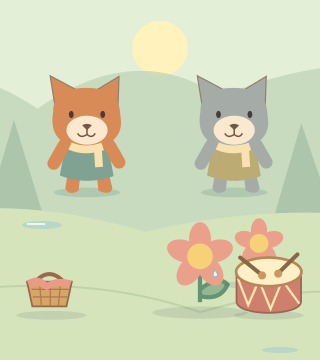
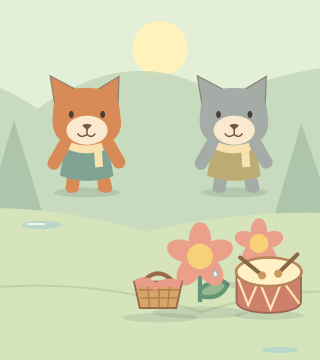
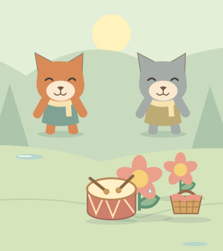
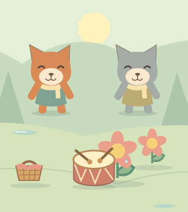

花园小聚会
第一步试样：先听音乐表达，再看四种摆放。
现提供 A 纯语音与 B 短音效方案。B 音效由本项目程序合成，未使用外部录音素材。这里是声音与静态构图样稿，不是完整故事播放器。
A / B 逐段对比
A 保留原录音。B 先播放约 1.2 秒的合成鼓声或拍手声，再接同一角色对白，去掉开头重复的“咚咚、拍拍”。这是两种完整表达方案，不是完全相同录音的音效开关。
小猫开场
A · 语音节奏咚咚，哒！听，我先敲起来啦！
B · 短音效＋对白听，我先敲起来啦！
小狐狸拍手加入
A · 语音节奏拍拍，咚咚！我跟上鼓声啦！
B · 短音效＋对白我跟上鼓声啦！
小猫示范后邀请
A · 语音节奏咚咚，哒！这一小段敲完啦，接下来请你和小狐狸一起！
B · 短音效＋对白这一小段敲完啦，接下来请你和小狐狸一起！
小狐狸敲鼓回应
A · 语音节奏咚咚，咚咚！我们的鼓声也响起来啦！
B · 短音效＋对白我们的鼓声也响起来啦！
从试摆到两种安排
开场：篮子和小鼓到场

试摆：篮子来到中间

花边：篮子移到右边

草地：篮子放在左边

请你确认
1. 你更喜欢 A 还是 B？B 的鼓声、拍手声是否自然，音量是否舒服？
2. 中间篮子靠花、右边更靠花，以及草地方案的差异是否清楚？
没有采集麦克风、自动播放或上传。正式故事与音频未改变。